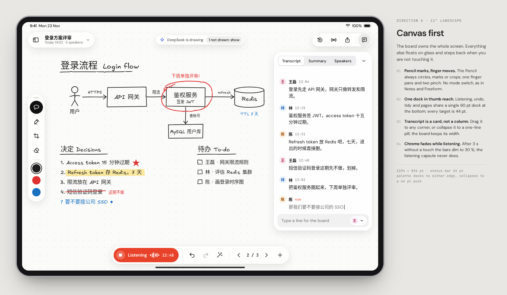
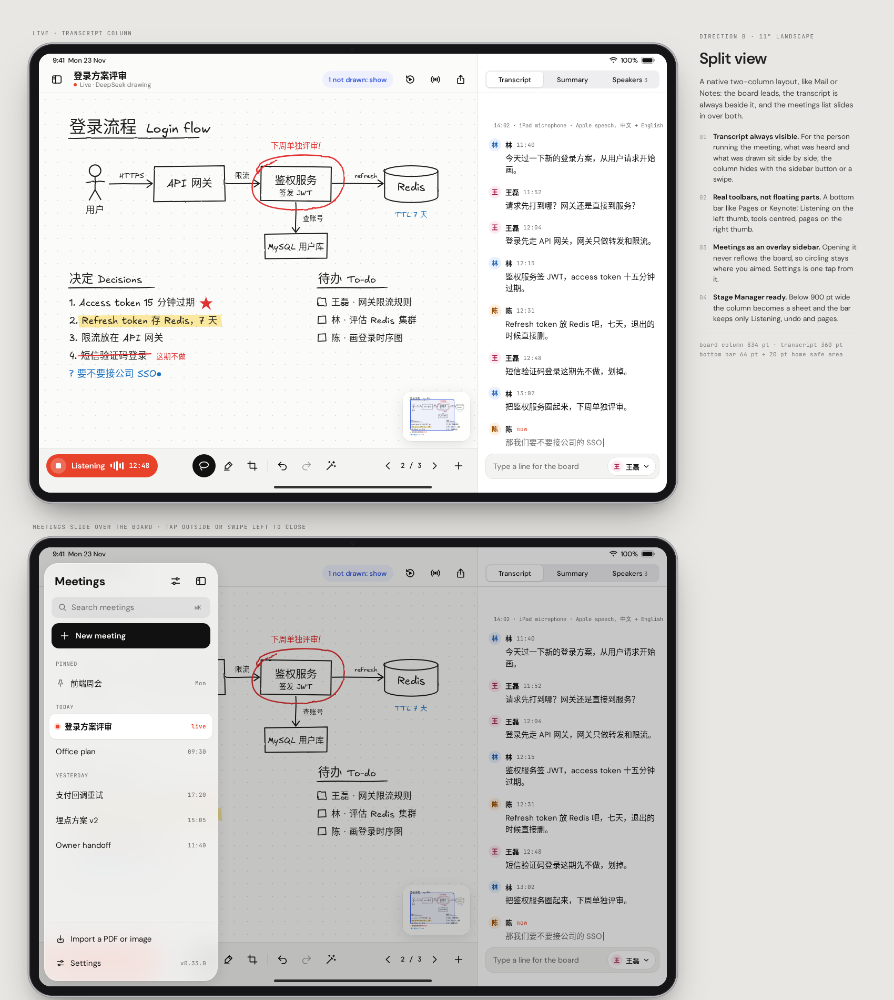
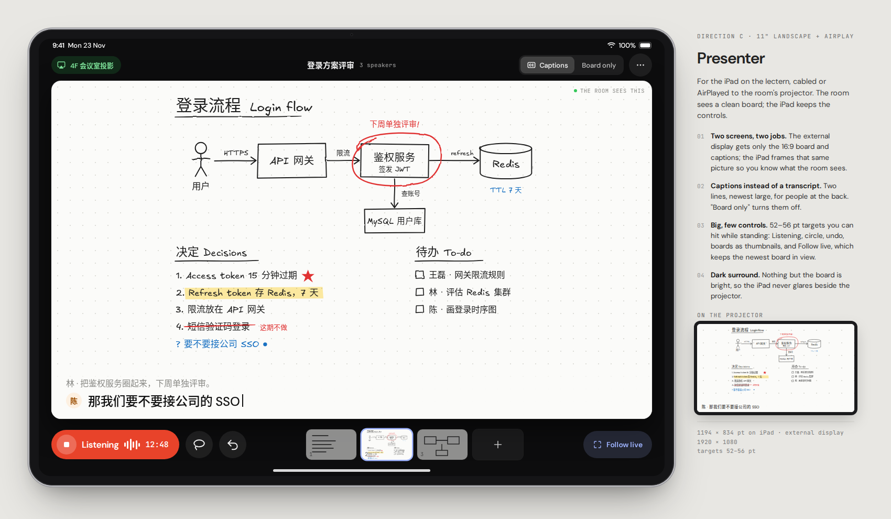
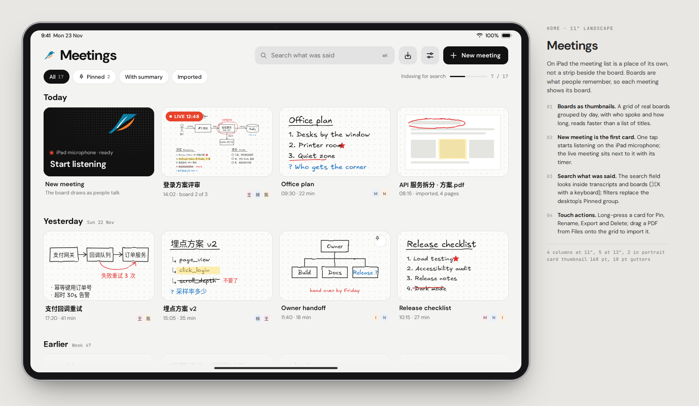
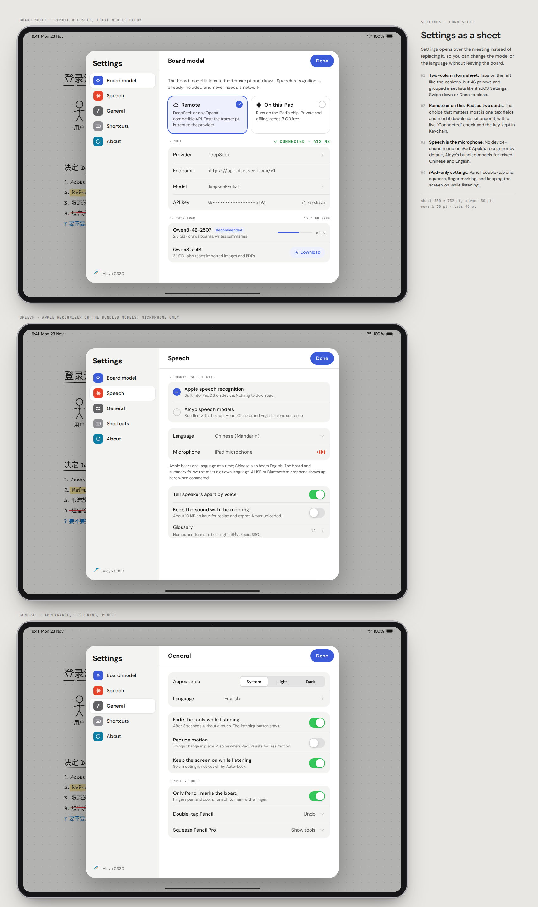
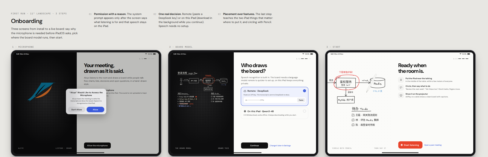
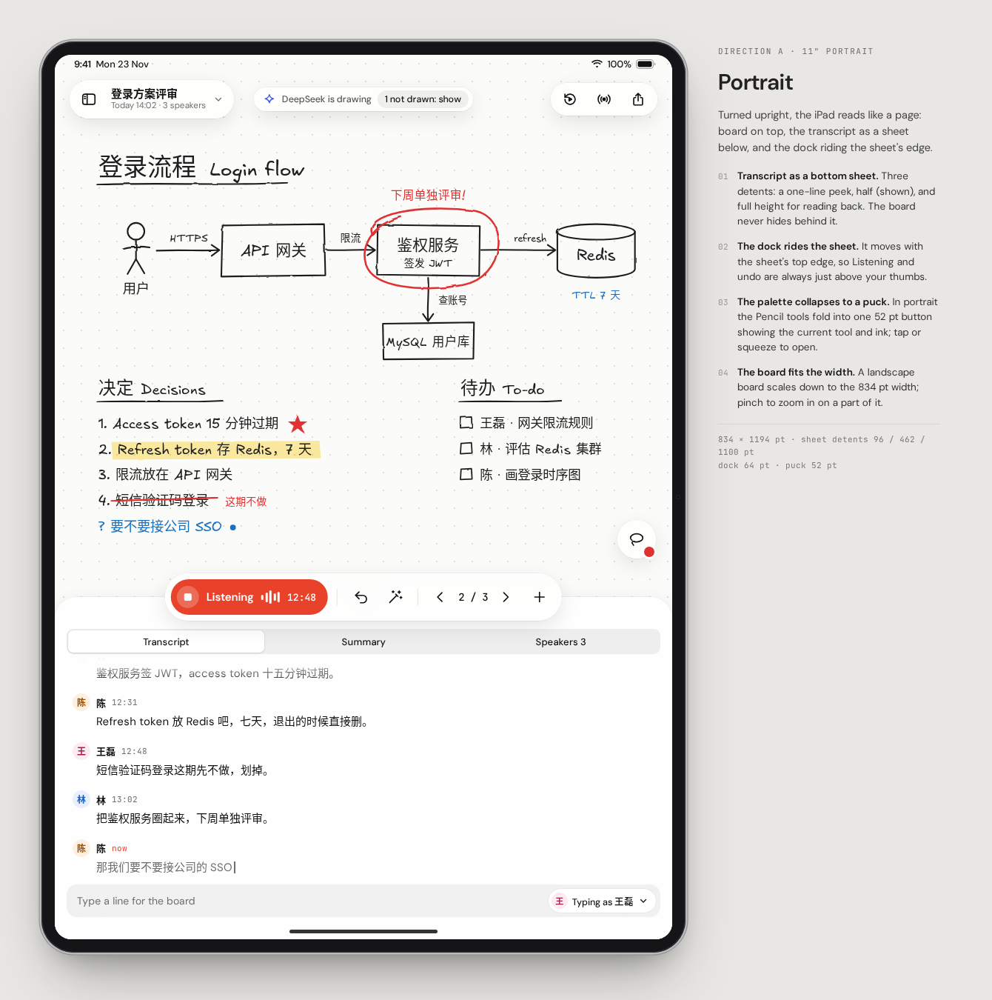
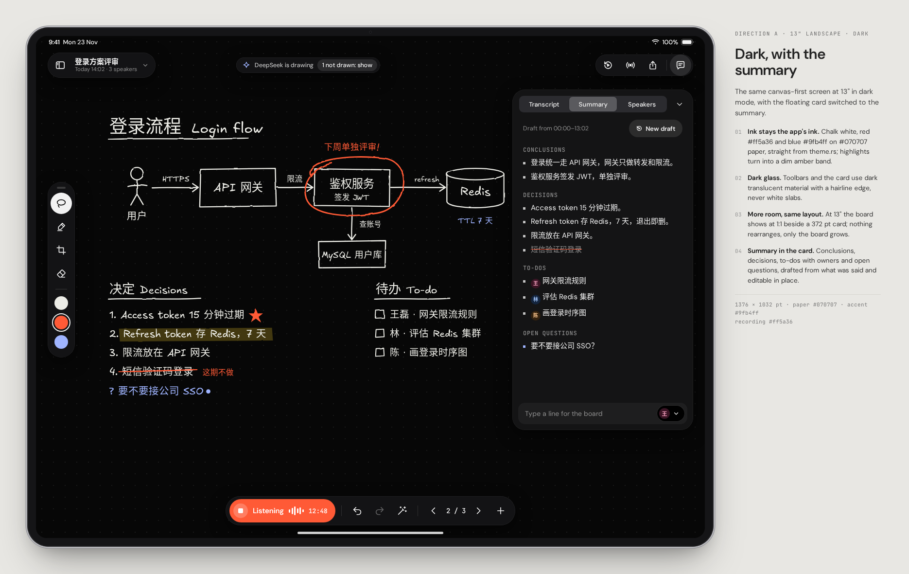
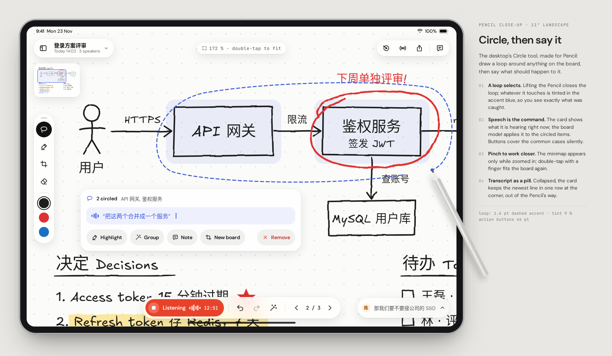
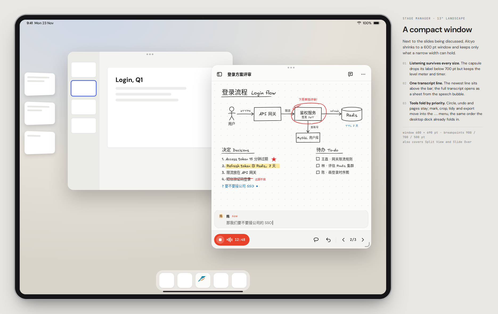

The iPad gets its own layout instead of the desktop's squeezed onto a tablet. Three directions for the live meeting screen, then the screens around it. The palette, ink and fonts are the shipping app's (crates/ui/src/theme.rs); devices are drawn at true point size, 11" at 1194 × 834 and 13" at 1376 × 1032. Each page opens at full size with notes beside the device.
The same board and the same moment in the meeting, so only the layout differs.



Shown in direction A, which these screens assume.







Canvas first is the most iPad-native: the board gets the whole screen, the Pencil always marks while fingers move it, and every control the meeting needs sits in one dock under the thumbs. Its parts carry over: the floating card becomes B's column on 13" when wanted, the dock shrinks for Stage Manager, and C can follow later as a mode that only changes what the external display shows.